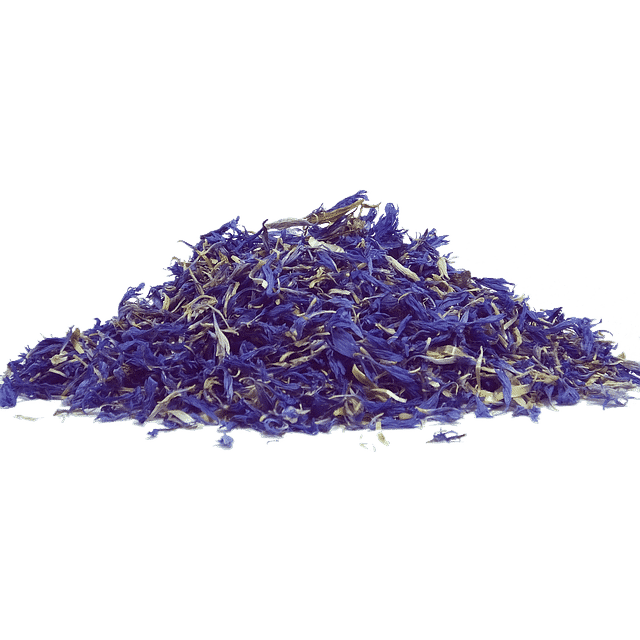

<!DOCTYPE html>
<html lang="en">
<head>
    <meta charset="UTF-8">
    <meta name="viewport" content="width=device-width, initial-scale=1.0">
    <title>TeaShop  | Achat de thés parfumés de qualité d'origine bio et naturel </title>
    <link href="https://cdn.jsdelivr.net/npm/bootstrap@5.3.2/dist/css/bootstrap.min.css" rel="stylesheet" integrity="sha384-T3c6CoIi6uLrA9TneNEoa7RxnatzjcDSCmG1MXxSR1GAsXEV/Dwwykc2MPK8M2HN" crossorigin="anonymous">
    <meta name="description" content =" Explorez notre sélection de thés de qualité. Découvrez des arômes raffinés et uniques pour une expérience inégalée. Achetez en ligne pour découvrir nos thés. "/>
    <meta name=" keywords" content ="thé bio et naturel, nature ,bio ,écologique,infusion,parfum,parfumé,saveur,odeur,the,the vert,the rouge,the bleu,the noir,the blanc,nature, biologique, agriculture biologique, en bouche, arôme, bouquet, herbes, végétal, floral,doux, fort, aqueuse, poudreux, veloutée, soyeux, herbes fraiches, santé, bien-être, the oolong, matcha, thé marocain, Thé en vrac, Thé biologique, Thé artisanal, Thé aromatisé, Thé pour la santé, Meilleurs thés, Herbes fraiches, Thé pour la relaxation, Santé mentale ">
    <meta name="copyright" content ="Made by @ 2023 TeaShop ">
    <meta name = "robots" content="">
    <script src="https://cdn.jsdelivr.net/npm/bootstrap@5.3.2/dist/js/bootstrap.bundle.min.js" integrity="sha384-C6RzsynM9kWDrMNeT87bh95OGNyZPhcTNXj1NW7RuBCsyN/o0jlpcV8Qyq46cDfL" crossorigin="anonymous"></script>
    <link rel="stylesheet" href="style.css">
<link rel="preconnect" href="https://fonts.googleapis.com">
<link rel="preconnect" href="https://fonts.gstatic.com" crossorigin>
<link href="https://fonts.googleapis.com/css2?family=Lora&display=swap" rel="stylesheet">
  </head>

<body>


</html>

  <nav class="navbar navbar-expand-lg  navbar-success bg-light ">
    <div class="container-fluid" >
      <a class="navbar-brand" href="index.html"> 
      </a>
      <button class="navbar-toggler" type="button" data-bs-toggle="collapse" data-bs-target="#navbarNavDropdown" aria-controls="#navbarNavDropdown" aria-expanded="false" aria-label="Toggle navigation">
        <span class="navbar-toggler-icon"></span></button>
      <div class="collapse navbar-collapse" id="#navbarNavDropdown ">
        <ul class="navbar-nav me-auto mb-2 mb-lg-0">
          <li class="nav-item active">
            <a class="nav-link active display-4" aria-current="page" href="#logoAccueil">Accueil</a>
          </li>
          <li class="nav-item">
            <a class="nav-link  " href="#presentatione">Qui sommes-nous ?</a>
          </li>

          <li class="nav-item">
            <a class="nav-link  " href="#nosthés"> Nos Thés</a>
          </li>

          <li class="nav-item">
            <a class="nav-link " href="#texteapropos"> À propos  </a>
          </li>

          <li class="nav-item">
            <a class="nav-link" href="#contactn">Contacts</a>
          </li>

        </ul>
        <form class="d-flex" role="search">
          <input class="form-control me-2" type="search" placeholder="Search..." aria-label="Search">
          <button class="btn btn-outline-success " type="submit">Chercher</button>
        </form>
      </div>
    </div>
  </nav>


  <div id="carouselExampleCaptions" class="carousel slide">
    <div class="carousel-indicators">
      <button type="button" data-bs-target="#carouselExampleCaptions" data-bs-slide-to="0" class="active" aria-current="true" aria-label="Slide 1"></button>
      <button type="button" data-bs-target="#carouselExampleCaptions" data-bs-slide-to="1" aria-label="Slide 2"></button>
      <button type="button" data-bs-target="#carouselExampleCaptions" data-bs-slide-to="2" aria-label="Slide 3"></button>
    </div>
    <div class="carousel-inner">
      <div class="carousel-item active">
        
        <div class="carousel-caption d-none d-md-block">
          <h2 class="titrec">Des thés savoureux</h2>
          <p class="textc">TeaShop propose une vaste gamme de thés avec des saveurs extraordinaires.</p>
        </div>
      </div>
      <div class="carousel-item ">
        
        <div class="carousel-caption d-none d-md-block">
          <h2 class="titrec"> Une agriculture biologique</h2>
          <p class="textc"> Notre agriculture respecte les normes écologiques et le travail de nos employés.</p>
        </div>
      </div>
      <div class="carousel-item">
        
        <div class="carousel-caption d-none d-md-block">
          <h2 class="titrec"> Une production artisanale</h2>
          <p class="textc" > Chaque feuille de thé est récoltée à la main, avec soin et respect pour la nature.</p>
        </div>
      </div>
    </div>
    <button class="carousel-control-prev" type="button" data-bs-target="#carouselExampleCaptions" data-bs-slide="prev">
      <span class="carousel-control-prev-icon" aria-hidden="true"></span>
      <span class="visually-hidden">Previous</span>
    </button>
    <button class="carousel-control-next" type="button" data-bs-target="#carouselExampleCaptions" data-bs-slide="next">
      <span class="carousel-control-next-icon" aria-hidden="true"></span>
      <span class="visually-hidden">Next</span>
    </button>
  </div>
   
  <div class="p-5">
  <h1 class="thbioetnaturel  display-1 " id="texteapropos">Thé Bio et naturel </h1>
<p class="fs-3"> Nos thés sont bio et naturel provenant de cultures respectueuses de l'environnement, sans ajout de produits chimiques synthétiques, et qui offre une expérience gustative plus authentique et saine pour les amateurs de thé</p>
  </div>


  <div class="card bg-dark text-white" >
    
    <div class="card-img-overlay" >
      <h2 class="card-title fst-italic fw-light position-absolute top-50 start-50 translate-middle display-1"> "TeaShop, de merveilleuses saveurs en bouche"</h2>
    </div>
  </div>


<div class="notreHistoire p-5 ">

<div class="imagedepresentation" id="presentatione">

<p class="texteP fs-4 ">TeaShop est une entreprise passionnée dédiée à l'art du thé. Fondée en 2023, notre entreprise a évolué pour devenir un acteur majeur de l'industrie du thé, offrant une large gamme de thés exquis, d'accessoires et d'expériences de dégustation uniques. Nous sommes fiers de partager notre amour du thé avec des clients du monde entier.</p>

</div>


</div>


  <div class="row row-cols-1 row-cols-md-3 g-4" >
    <div class="col" 
    data-toggle="animation"
     data-animation-start="onHover" 
     data-animation-reset="true" 
     data-animation="pulse" >
     
      <div class="card h-100" id="nosthés" >
        
        <div class="card-body bg-light"  >
          <h3 class="card-title"> Thé noir</h3>
          <p class="card-text"> Le thé noir est le type de thé le plus populaire en Occident, probablement en raison de sa saveur prononcée et de sa longue durée de conservation.</p>
          <a href="https://ileauxepices.com/blog/2013/05/03/le-the-noir-histoire-vertus-et-conseils-de-preparation/wpid2150/"><button type="button" class="btn btn-success .btn-lg "> En savoir + </button></a>

        </div>
    
      </div>
    </div>
    <div class="col">
      <div class="card h-100">
        
        <div class="card-body bg-light">
          <h3 class="card-title">Thé blanc</h3>
          <p class="card-text">Le thé blanc est exclusivement composé de jeunes bourgeons de théiers.
            Ces théiers sont cultivés exclusivement pour produire ce type de thé. L’origine la plus réputée est la province du Fujian, située sur la côte est de la Chine.</p>
            <a href="https://petitgaiwan.com/4__histoire-du-the-blanc"><button type="button" class="btn btn-success .btn-lg "> En savoir + </button></a>
        </div>
      </div>
    </div>
    <div class="col">
      <div class="card h-100">
        
        <div class="card-body bg-light">
          <h3 class="card-title">Thé vert</h3>
          <p class="card-text"> le thé vert est fabriqué à partir de feuilles non fermentées, il est donc peu transformé. 
            Le thé vert est le deuxième thé le plus produit au monde après le thé noir.</p>
         <a href="https://www.thevert.com/histoire/"><button type="button" class="btn btn-success .btn-lg "> En savoir + </button></a>
        </div>
      </div>
    </div>

    <div class="col">
      <div class="card h-100">
        
        <div class="card-body bg-light">
          <h3 class="card-title"> Thé Oolong</h3>
          <p class="card-text">Le thé oolong biologique est un thé à part dans la classification habituelle des thés en raison de sa fermentation particulière.
             Le taux d'oxydation du thé oolong est très variable en fonction de la durée de fermentation qu'il subit et du procédé de torréfaction employé.</p>
         <a href="https://www.lautrethe.com/fr/blog/post/16-tout-savoir-sur-le-the-oolong.html"><button type="button" class="btn btn-success .btn-lg "> En savoir + </button></a>
        </div>
      </div>
    </div>
    <div class="col">
      <div class="card h-100">
        
        <div class="card-body bg-light">
          <h3 class="card-title">Thé Pu-erh </h3>
          <p class="card-text">Le thé pu erh (aussi appelé thé sombre en Chine) est un thé fermenté issu du Camellia Sinensis, un théier cultivé dans le Yunnan en Chine depuis des millénaires. Il doit son nom à la ville de Pu erh, centre commercial ancestral de la province du Yunnan.
           On le reconnait à sa robe rouge sombre, à son gout de sous-bois et à ses notes délicates de mousse.</p>
         <a href="https://www.kusmitea.com/fr/bienfaits-the-pu-erh.html"></a> <button type="button" class="btn btn-success .btn-lg "> En savoir + </button>
        </div>
      </div>
    </div>
    <div class="col">
      <div class="card h-100">
        
        <div class="card-body bg-light">
          <h3 class="card-title">Matcha</h3>
          <p class="card-text">TLe thé vert matcha est un type de thé vert bien particulier qui provient du Japon.
             Les caractères Japonais utilisés pour le matcha sont : 抹茶
            Ce qui veut dire littéralement « thé broyé ».</p>
             <a href="https://www.matcha-iro.com/decouvrir/histoire-du-matcha/"><button type="button" class="btn btn-success .btn-lg "> En savoir + </button></a>
        </div>
      </div>
    </div>
    <div class="col">
      <div class="card h-100">
        
        <div class="card-body bg-light">
          <h3 class="card-title">Maté</h3>
          <p class="card-text">Le maté est une plante qui se consomme en infusion, à l’image du thé. Elle est originaire d’Amérique du Sud et plus particulièrement d’Argentine, du Paraguay, et du Brésil.</p>
         <a href="https://www.kusmitea.com/fr/les-bienfaits-du-mate.html"><button type="button" class="btn btn-success .btn-lg "> En savoir + </button></a>
        </div>
      </div>
    </div>
    <div class="col">
      <div class="card h-100">
        
        <div class="card-body bg-light">
          <h3 class="card-title">Thé Rooibos</h3>
          <p class="card-text">Le Rooibos est un arbuste d'Afrique du Sud totalement distinct du théier.
             Très faible en tanins et dénuée de théine, cette boisson rouge aux vertus antioxydantes est idéale le soir.</p>
           <a href="https://www.thes-traditions.com/content/les-origines-du-the-rooibos"><button type="button" class="btn btn-success .btn-lg "> En savoir + </button></a>       
           </div>
      </div>
    </div>
    <div class="col">
      <div class="card h-100">
        
        <div class="card-body bg-light">
          <h3 class="card-title">Thé vert rose </h3>
          <p class="card-text">Le thé vert à la rose est un thé frais et désaltérant. 
            Les pétales de rose apportent de la douceur aux notes végétales du thé vert.</p>
         <a href=""><button type="button" class="btn btn-success .btn-lg "> En savoir + </button></a> 
        </div>
      </div>
    </div>
    <div class="col">
      <div class="card h-100">
        
        <div class="card-body bg-light">
          <h3 class="card-title"> Thé noir fruits rouges</h3>
          <p class="card-text">C'est un mélange de thés noirs de Chine aromatisé, comme son nom l'indique, aux fruits rouges et parsemés de morceaux de framboise apportant une touche acidulée.</p>
          <a href=""><button type="button" class="btn btn-success .btn-lg "> En savoir + </button></a>
        </div>
      </div>
    </div>
    <div class="col">
      <div class="card h-100">
        
        <div class="card-body bg-light">
          <h3 class="card-title">Thé Oolong bleu </h3>
          <p class="card-text">Le thé bleu est une spécialité du Fujian en Chine, du centre de Taiwan et du nord de la Thaïlande.
             Le terme thé bleu est en réalité une appellation qui désigne une sous famille des Oolong ou thé semi-oxydé. </p>
         <a href=""><button type="button" class="btn btn-success .btn-lg "> En savoir + </button></a> 
        </div>
      </div>
    </div>
    <div class="col">
      <div class="card h-100">
        
        <div class="card-body bg-light">
          <h3 class="card-title">Thé noir yunnan  </h3>
          <p class="card-text">Ce thé noir de Chine est réputé pour son léger goût de terre humide et pour sa discrète amertume. 
            Cela peut paraître antinomique, mais c’est un thé à la fois doux, moelleux et corsé, aux saveurs boisées et minérales.</p>
         <a href=""><button type="button" class="btn btn-success .btn-lg "> En savoir + </button></a> 
        </div>
      </div>
    </div>
    <div class="col">
      <div class="card h-100">
        
        <div class="card-body bg-light">
          <h3 class="card-title"> Thé blanc groseille framboise </h3>
          <p class="card-text">Le thé blanc Groseille-Framboise a été créé sur une base de trois thés : le thé blanc Mao Feng, le thé vert Chun Mee et le thé vert Sencha. 
            Une association parfaite entre les fruits rouges et la douceur du thé blanc.</p>
         <a href=""><button type="button" class="btn btn-success .btn-lg "> En savoir + </button></a> 
        </div>
      </div>
    </div>
    <div class="col">
      <div class="card h-100">
        
        <div class="card-body bg-light">
          <h3 class="card-title">Thé vert fleur d'oranger </h3>
          <p class="card-text">Marié à la douceur des feuilles d'Oranger et du Rooibos, ce Thé vert présente un parfum délicat de fleur d'Oranger, que l'on a envie de consommer lors de moments calmes et sereins.</p>
          <a href=""><button type="button" class="btn btn-success .btn-lg "> En savoir + </button></a>
        </div>
      </div>
    </div>
    <div class="col">
      <div class="card h-100">
        
        <div class="card-body bg-light">
          <h3 class="card-title">Thé à la menthe marocain </h3>
          <p class="card-text">Le thé à la menthe (en darija : أتاي (atāy), لأتاي (latāy), en berbère du nord : ⴰⵜⴰⵢ, atay, et en tawellemmet : ⵛⵂⴷ, ecehid) est une boisson chaude originaire du Maghreb, 
            réalisée à partir de feuilles de thé vert gunpowder et de feuilles de menthe.</p>
          <a href="https://kawa-news.com/histoire-du-the-a-la-menthe-tout-savoir-sur-cette-tradition-marocaine/"><button type="button" class="btn btn-success .btn-lg "> En savoir + </button></a>
        </div>
      </div>
    </div>
  </div>

  
    <div class="imagedefond p-3 d-flex ">    

    <div class="formboite " id="contactn">
      <h4 id="titrecontact">Contactez-nous</h4>
      <form action="" method="post">
        <div class="formelmts">
          <label for="nom">Nom</label>
          <input class="form-control" id="nom" type="text" name="Nom" placeholder="Nom">
        </div>
        <div class="formelmts">
          <label for="prenom">Prénom</label>
          <input class="form-control" id="prenom" type="text" name="Prenom" placeholder="Prénom">
        </div>
        <div class="formelmts">
          <label for="telephone">Téléphone</label>
          <input class="form-control" id="telephone" type="tel" name="telephone" placeholder="+33 6 11 22 33 44">
        </div>
        <div class="formelmts">
          <label for="email">Email</label>
          <input class="form-control" id="email" type="email" name="Email" placeholder="exemple@gmail.com">
        </div>
        <div class="formelmts">
          <label for="message">Message</label>
          <textarea class="form-control" id="message" name="Message" placeholder="Saisissez un texte..."></textarea>
        </div>
        <input class="btn btn-success" type="submit" value="Envoyez" />
        </div>
      </form>
    </div>

  

  
  <section class="d-flex justify-content-center justify-content-lg-between p-4 border-bottom bg-light">
   
    <table class="table table-success justify-content-center p-4">
      <thead>
        <tr>
          <th scope="col">1</th>
          <th scope="col"> Thé noir</th>
          <th scope="col"> Thé vert</th>
          <th scope="col">Thé Oolong</th>
        </tr>
      </thead>
      <tbody>
        <tr>
          <th scope="row">2</th>
          <td>456789</td>
          <td>466943</td>
          <td>486089</td>
        </tr>
        <tr>
          <th scope="row">3</th>
          <td> En cours de livraison</td>
          <td> En cours de livraison </td>
          <td>En cours de livraison</td>
        </tr>
       
      </tbody>
    </table>
    
  
   
  </section>
     
      <div class="blockvert bg-success p-5" >


        <div class=" d-flex justify-content-around " >

          <a href="#nosthés" ></a> 
           
          <h5 class="titresb"> Nos thés </h5> 

         <a href="#presentatione"></a> 

          <h5 class="titresb"> The TeaShop story</h5> 

          <a href="#texteapropos"></a> 
           
           <h5 class="titresb"> Bio et naturel</h5> 

           <a href="#contactn"></a> 

          <h5 class="titresb"> Nos contacts</h5> 

          </div>

      </div>


      <footer>    
    
        <section class="">
          <div class="container text-center text-md-start mt-5">
           
            <div class="row mt-3">
              
              <div class="col-md-3 col-lg-4 col-xl-3 mx-auto mb-4">
               
                <h6 class="text-uppercase fw-bold mb-4 bg-succes">
                   TeaShop
                </h6>
                <p>
                 TeaShop est une entreprise passionnée dédiée à l'art du thé. Fondée en 2023, notre entreprise a évolué pour devenir un acteur majeur de l'industrie du thé, offrant une large gamme de thés exquis, d'accessoires et d'expériences de dégustation uniques.
                 Nous sommes fiers de partager notre amour du thé avec des clients du monde entier.
                </p>
              </div>
           
      
              <div class="col-md-2 col-lg-2 col-xl-2 mx-auto mb-4">
                
                <h6 class="text-uppercase fw-bold mb-4">
                  L'Histoire du thé
                </h6>
                <p>
                  <a href="#!" class="text-reset">Notre histoire</a>
                </p>
                <p>
                  <a href="index.html" class="text-reset"> Nos thés</a>
                </p>
                
              </div>
              
      
           
              <div class="col-md-3 col-lg-2 col-xl-2 mx-auto mb-4">
              
                <h6 class="text-uppercase fw-bold mb-4">
                Infos pratiques
                </h6>
                <p>
                  <a href="#!" class="text-reset">Mentions légales</a>
                </p>
                <p>
                  <a href="politiquedecfd.html" class="text-reset">Politique de confidentialité</a>
                </p>
               
              </div>
            
      
           
              <div class="col-md-4 col-lg-3 col-xl-3 mx-auto mb-md-0 mb-4 ">
              
                <h6 class="text-uppercase fw-bold mb-4">Contacts</h6>
      
                <p><i class="fas fa-home me-3"></i> Toulouse, 31102, France</p>
                <p>
                 <a href="index.html"> <i class="fas fa-envelope me-3"></i></a>
                  teashop@company.com
                </p>
                <p><i class="fas fa-phone me-3"></i> + 33 34 67 88 53</p>
              
              </div>
            
            </div>
           
          </div>
        </section>
      
      
     
        <div class="text-center p-4 bg-body-tertiary">
         © 2023 TeaShop
        </div>
      
      </footer>
 


</body>

</html>